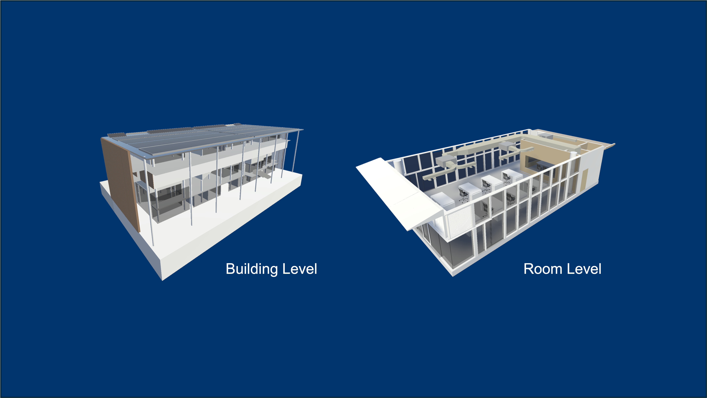

Building Digital Twins:
A Building-Scale Digital Twin Platform for Smart Building Operations
Project summary
Building Digital Twin is a related project that focuses on building-scale digital twin technologies. It aims to integrate building information, operational data, and interactive visualization to support smarter building monitoring, analysis, and decision-making.
Connection to Urban Digital Twins
While the BIOR Urban Digital Twin focuses on urban-scale microclimate-informed building energy analysis, Building DT focuses on building-scale data integration and operational intelligence. Together, they support multi-scale digitalization of the built environment.